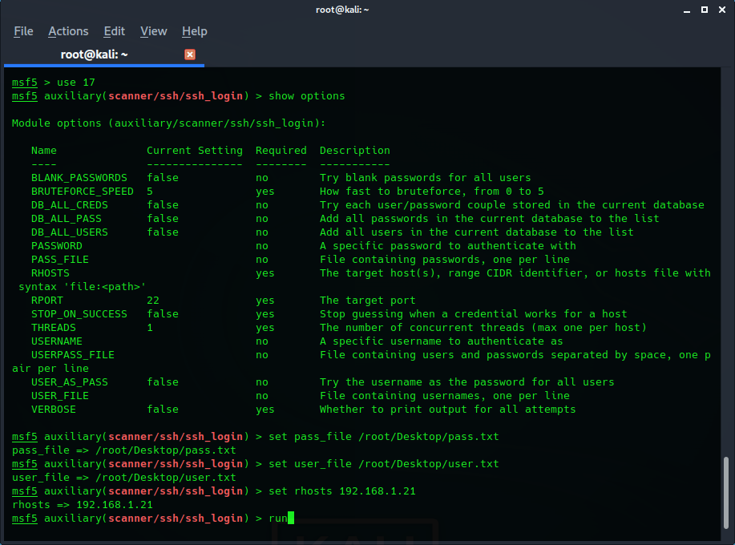

BruteForce saldırısı
BruteForce saldırısı nedir? BruteForce için kullanılır?
Metasploitable2 Makinesi üzerinde SSH
protokolüne BruteForce saldırısı.
Merhabalar. Bu yazım yazımda başka bir yazımda incelediğimiz metasploitable2 makinesi/platformunu tekrar işleyeceğim ve yine anlatmış olduğum SSH protokolü üzerinde de duracağız. Sadede gelecek olursak metasploitable2 makinesine SSH BruteForce(kaba kuvvet) saldırısı yapacağız. Bu saldırının nasıl yapıldığını ve mantığını öğreneceğiz.
Öncelikle BruteForce nedir? BruteForce bir saldırı tekniğidir ve hayal edemeyeceğimiz kadar yaygın bir kullanımı vardır. BruteForce saldırıların temeli deneme yanılma yöntemine dayanmaktadır. Hemen bir örnek verelim. Mobil bankacılık şifrelerimizi düzenli olarak değiştiriyoruz.(Umarım değiştiriyoruzdur.) Bunu ben yaşadığım için böyle bir örnek veriyorum. Acele bir işimiz olduğunda olur genelde. Telefonumuzu elimize alıyoruz uygulamayı açıyoruz, bizden istenen müşteri numarası(TC vs.) bilgisini ve şifremizi giriyoruz. Bir uyarı yanlış şifre. Sonra acaba şu muydu deyip onu deniyoruz, sonra bunu derken bir şekilde doğru şifreyi denk getiriyoruz. Aslında BruteForce mantığı tamamen buna dayanmaktadır. Sisteme tek tek doğrusunu denk getirene kadar kullanıcı adı ve parola girişi deniyoruz. Kullanıcı adını biliyor olabiliriz bu sefer parola deniyoruz. Parolasını biliyor olabilir kullanıcı adını deniyoruz. Bunu yaparken tabii ki tek tek elimizle girmiyoruz.
SSH protokolünden daha önce bahsetmiştim isteyenler buradan o yazımı da okuyabilir.
Hazırsak başlayalım. Öncelikle metasploitable2 makinesinin ağ ayarlarını saldırgan makinemiz ile aynı ağı kullanıp kullanmadığını kontrol ediyoruz. Aynı ağı kullandıklarından emin olduktan sonra başlatabiliriz.
Her zaman için bir saldırının başlangıç noktası nereye saldıracağını öğrenmekten geçer.
netdiscover
komutu ile;
Hemen ağı tarıyoruz ve hedef makineyi belirliyoruz. Hedef makinemizin IP adresini tespit ettiğimize göre artık araştırmaya başlayabiliriz. Hedef makinanın portları üzerinde tarama işlemi gerçekleştireceğiz. Neyse ki nmap yardımımıza hemen yetişiyor. nmap toolunu kullanarak karşı makinada bir tarama işlemi gerçekleştiriyoruz.
nmap -A 192.168.1.21
komutu ile;
Hedef makinada bir nmap taraması yapıyoruz. Burada kullandığımız A parametresi agresif tarama parametresidir. Zaafiyetli bir makine olduğu için bu parametreyi kullanarak tarama yapabiliyoruz. Gerçek hayatta genelde agresif tarama hemen fark edilir. Yaptığımız bu tarama sonucunda göreceksiniz ki zaten metasploitable2 bir çok zaafiyetin bir araya getirildiği bir platform. Fakat şimdi bizim amacımız SSH üzerinden BruteForce saldırı gerçekleştirmek. O yüzden diğer zaafiyetlerle ilgilenmiyoruz şimdilik(Sadece şimdilik). 22/tcp portu açık ve SSH protokolü bu portta hizmet veriyor. Versiyon bilgiside bulunmakta. O zaman metasploit framework'üne geçiş yapabiliriz.
msfconsole
komutu ile;
Metasploit framework'ünü açıyoruz. Bizim ihtiyacımız olan BruteForce atacak bir yardımcı modül.
search ssh
komutu ile;
Arama yapıyoruz. Bildiğimiz üzere auxiliary modülleri yardımcı modüller. Zaten auixiliary kelimesinin türkçesi de yardımcı anlamına gelmektedir. O halde bir auixiliary modülü olacak seçeceğimiz modül. BruteForce işlemi yapacağız. Login işlemini BruteForce ile gerçekleştirmeye çalışacağız. Yani en uygun modül sanki auxiliary(scanner/ssh/ssh_login) modülü gibi görünüyor.
use 17
komutu ile seçiyoruz.
show options
komutu ile modülü inceliyoruz.
Aslında gerekli bir çok açıklama burada yapılmış ama ben yinede biraz bahsedeyim. Öncelikle modüle nereye saldıracağını bildirmemiz gerekiyor. Hedefin IP adresini biliyoruz. Daha sonra karşı tarafın kullanıcı adını ve şifresini bilmiyoruz. Bunlar için birer txt dosyası gerekiyor. Bu dosyaların uzantılarını veriyoruz. Bu işlemler için;
set pass_file /root/Desktop/pass.txt
set user_file /root/Desktop/user.txt
set rhosts 192.168.1.21
run
komutlarını kullanıyoruz.
Peki şimdi ne yapıyor bu modül? Bizim ona uzantısını vermiş olduğumuz user.txt dosyasından ilk kullanıcı adını alıyor. Sonra pass.txt dosyasındaki tüm parola ihtimalleri ile tek tek deniyor. Olmadı mı? user.txt dosyasından bir sonraki kullanıcı adını alıyor ve tekrar tüm pass.txt dosyasında bulunan parola ihtimalleri ile deniyor. Bu işlem sonuç başarılı olana kadar, tüm ihtimaller denene kadar veya arada ki bağlantı kopartılana kadar devam ediyor. yani biraz uzun sürebilir. İtiraf etmem gerekir ki başarısızlıkla sonuçlanabilir. Allah'tan metasploitable2 makinası zaafiyetli bir makina ve easy password zaafiyeti sayesinde bu işlem bir an önce sonuçlanıyor. [SUCCES] yazısı dikkatimizi çekiyor hemen.
Peki şimdi ne mi yapacağız? Artık makinaya giriş yapabilirsiniz.
ssh msfadmin@192.168.1.21
komutu ile;
Burada msfadmin@ eklentisi msfadmin kullanıcı olarak giriş talebinde bulunduğumuzu belirtiyor. Sonra bizden parola isteyecek ve parolayı girdiğimizde SSH protokolü üzerinden makinaya giriş yapmış olacağız. Başarılı bir şekilde BruteForce işlemini gerçekleştirdiğimizi gösteriyor buda.